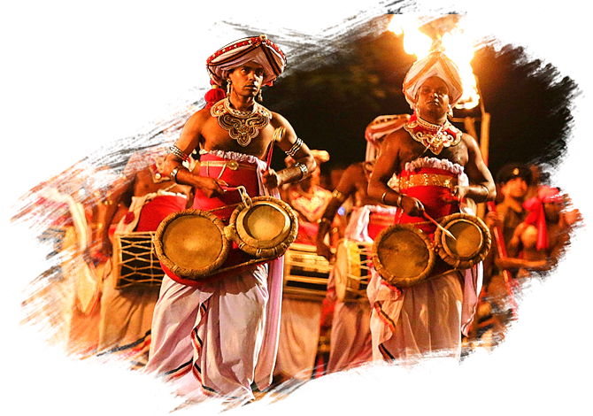
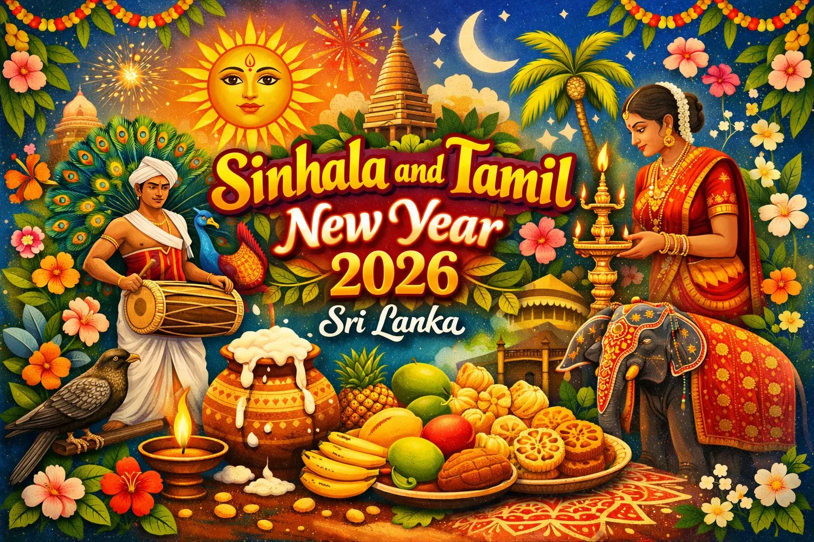
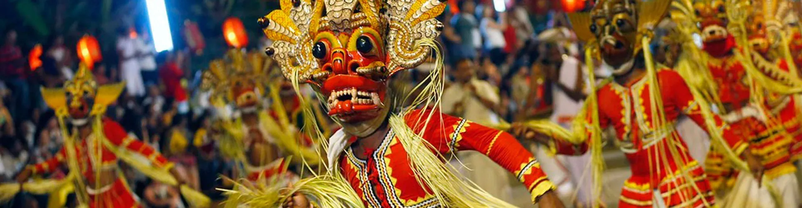

Discover the joyful celebrations, colourful pageantry and cultural festivals that bring Sri Lanka to life.
From sacred temple processions to lively village celebrations, Sri Lanka's festivals are a blend of tradition, music, flavours and family spirit. Every season offers a new reason to celebrate.

Experience spectacular temple processions like the Kandy Esala Perahera, with drummers, dancers and decorated elephants.

April brings Sinhala and Tamil New Year rituals, delicious seasonal treats, family games and cultural blessings.

Enjoy vibrant processions, music, illuminated streets and local performances during harvest and cultural festivals.
Sri Lanka's festivals are more than colourful events—they are living stories of culture, community and joy. Each celebration invites visitors to share in music, food, dance and ancient rituals that have been passed down for generations.
From temple pageantry to New Year blessings and coastal lantern parades, every moment is filled with warmth, tradition and bright colour.